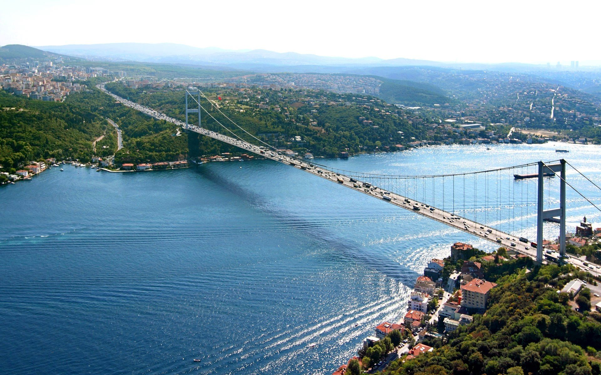
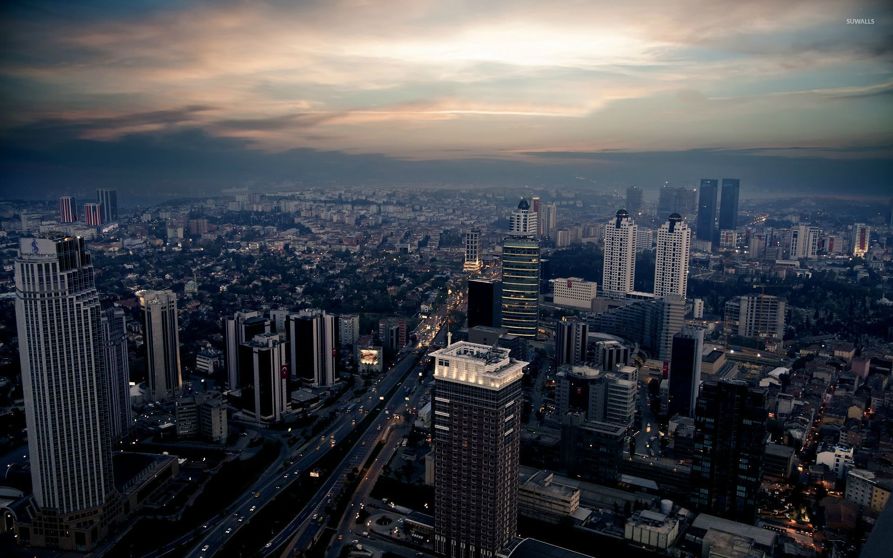

ISTANBUL
Istanbul is a major city in Turkey that straddles Europe and Asia across the Bosphorus Strait. Its Old City reflects cultural influences of the many empires that once ruled here. In the Sultanahmet district, the open-air, Roman-era Hippodrome was for centuries the site of chariot races, and Egyptian obelisks also remain. The iconic Byzantine Hagia Sophia features a soaring 6th-century dome and rare Christian mosaics.

The most populous city in Europe, Istanbul forms the financial centre of Turkey and confidently straddles the borders between Asia and Europe as it has for millennia: this is the result when you mix ancient Christendom, a medieval metropolis and the modern Middle East. Situated on either side of the Bosphorus, Istanbul retains its metropolitan status: the city's population is more than 14 million people, making it one of the largest cities in the world.
Lauded in antiquity as "the second Rome", this is a city where you most certainly should roam — culture and excitement lie around every corner and more than 2000 years of history await you.
